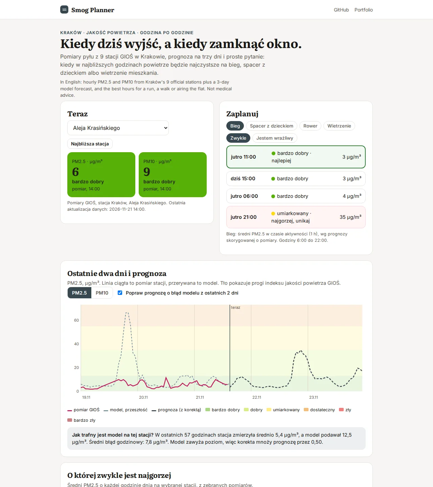

The problem
Air quality apps show a coloured dot for right now. People planning a run or a walk need the best and worst hours ahead, and to know how far to trust the forecast.

What it does
- Now: measured PM2.5 and PM10 with the official index.
- Planner: best three windows and the one to avoid in the next 36 hours.
- Model check: forecast against station, with an optional correction.
- Hourly job that copies official data the browser cannot read directly.
Findings and decisions
Confirmed
The official API cannot be read from a web page
Browser requests to the GIOŚ API fail, so an hourly GitHub Action copies the data into the repo.
Confirmed on the first run
Not every station publishes hourly PM data
Four of nine Kraków stations returned hourly PM data, and only one returned both PM2.5 and PM10. The app labels the others "forecast only".
Early observation
The model can be far from the station
Over about two days at Aleja Krasińskiego the model averaged 12.6 µg/m³ against 5.4 measured. One station and one clean-air period, so not a pattern yet.
What I would do next
- Publish the model gap per station after four weeks.
- Add other Polish cities.
- Morning summary as an installable app.